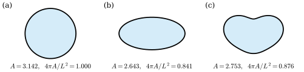

5.7 등주부등식 (선택)
이 절의 목표
- 닫힌 평면곡선의 부호 있는 넓이 \(A(\gamma) = \frac12\int(xy' - yx')\,dt\)를 정의하고, 단순 닫힌 곡선이면 그것이 둘러싼 영역의 넓이임을 설명할 수 있다.
- 평균이 \(0\)인 주기함수에 대한 비르팅거 부등식 \(\int f'^2 \ge \int f^2\)을 증명할 수 있다.
- 등주부등식 \(L^2 \ge 4\pi\abs{A}\)를 증명하고, 등호가 원을 한 번 도는 곡선에서만 성립함을 보일 수 있다.
선수 지식
- 정의 5.6.1 (닫힌 곡선), 명제 5.6.4 (재매개화와 호의 길이 매개화)
- 곡선의 길이(정의 4.2.7)와 재매개화 불변성(정리 4.3.6)
- 그린 정리(정리 2.6.13. 조르당 곡선 정리와 “양의 방향”이 여기서 받아들여져 있다)
- 중간값 정리(따름정리 3.7.6), 1변수 미적분의 로피탈의 정리와 부분적분
동기
5.6절의 접선회전정리는 단순 닫힌 곡선의 전역적인 성질이었다. 또 하나의 고전적인 전역 정리가 있다. 길이가 \(L\)인 끈으로 평면에서 울타리를 두르면 가장 넓은 땅을 둘러싸는 모양은 무엇인가? 답은 원이고, 넓이는 \(L^2/4\pi\)이다. 이것이 등주부등식이다. 그리스 시대부터 알려진 답이지만, 최댓값이 존재한다는 것까지 포함한 엄밀한 증명은 19세기에야 나왔다.
이 절은 넓이를 곡선의 적분 \(\frac12\int(xy' - yx')\,dt\)로 나타내고, 푸리에 급수 없이 증명할 수 있는 비르팅거 부등식 하나로 등주부등식을 얻는다. 필수 흐름 밖의 선택 절이며, 뒤의 장에서 이 절의 결과를 쓰지 않는다.

곡선이 둘러싸는 넓이
정의 5.7.1 (부호 있는 넓이, signed area). \(\gamma(t) = (x(t), y(t))\)가 주기 \(T\)인 닫힌 곡선일 때
를 \(\gamma\)가 둘러싸는 부호 있는 넓이(signed area)라 한다.
피적분함수 \(\tfrac12(xy' - yx')\)는 원점, \(\gamma(t)\), \(\gamma(t) + \gamma'(t)\,dt\)가 만드는 가는 삼각형의 부호 있는 넓이(정의 1.6.6의 \(2 \times 2\) 행렬식의 절반)다. 곡선이 원점 둘레를 반시계 방향으로 돌면 이 삼각형들이 부채꼴처럼 모여 넓이를 채운다.
명제 5.7.2 (부호 있는 넓이의 성질). \(\gamma\)가 주기 \(T\)인 닫힌 곡선이라 하자.
- (a) \(A(\gamma) = \int_0^T x\,y'\,dt = -\int_0^T y\,x'\,dt\)이다.
- (b) 명제 5.6.4(b)의 재매개화 \(\gamma \circ h\)에서, \(h\)가 방향을 보존하면 \(A(\gamma \circ h) = A(\gamma)\), 뒤집으면 \(A(\gamma \circ h) = -A(\gamma)\)이다.
- (c) 평면의 강체운동 \(\psi\)에 대해 \(A(\psi \circ \gamma) = A(\gamma)\)이고, 반사 \((x, y) \mapsto (x, -y)\)를 합성하면 \(A\)의 부호가 바뀌며, \(\lambda \gt 0\)배 확대에 대해 \(A(\lambda\gamma) = \lambda^2A(\gamma)\)이다.
증명. (a) \((xy)' = x'y + xy'\)이고 \(xy\)는 주기 \(T\)를 가지므로 \(\int_0^T (x'y + xy')\,dt = x(T)y(T) - x(0)y(0) = 0\)이다. 곧 \(\int xy' = -\int yx'\)이고, \(A\)는 두 값의 평균이다.
(b) \(\beta = \gamma \circ h\)이면 \(\beta' = h'\,\gamma'(h)\)이므로 \(x_\beta y_\beta' - y_\beta x_\beta' = h'\,(xy' - yx')(h(u))\)이다. 치환 \(t = h(u)\)로 \(\int_0^{\tilde T}\) 가 \(h' \gt 0\)이면 \(\int_{h(0)}^{h(0) + T}\), \(h' \lt 0\)이면 \(\int_{h(0)}^{h(0) - T} = -\int_{h(0) - T}^{h(0)}\)이 되고, 피적분함수가 주기 \(T\)를 가지므로 각각 \(2A(\gamma)\), \(-2A(\gamma)\)이다.
(c) 평행이동 \(\gamma + c\)에서는 \((x + c^1)y' - (y + c^2)x' = (xy' - yx') + c^1y' - c^2x'\)이고 \(\int_0^T y' = \int_0^T x' = 0\)(주기성)이므로 \(A\)가 같다. 회전 \(R_\alpha\)에서는 \(xy' - yx' = \det(\gamma, \gamma')\)이고 \(\det(R_\alpha\gamma, R_\alpha\gamma') = \det R_\alpha\,\det(\gamma, \gamma') = \det(\gamma, \gamma')\)이다(정리 1.6.8(a)). 반사의 행렬 \(\diag(1, -1)\)은 행렬식이 \(-1\)이므로 부호가 바뀌고, \(\lambda\)배는 \(\det(\lambda\gamma, \lambda\gamma') = \lambda^2\det(\gamma, \gamma')\)이다.
예 5.7.3. (a) 반시계 방향 원 \((r\cos t, r\sin t)\)은 \(xy' - yx' = r^2\cos^2 t + r^2\sin^2 t = r^2\)이므로 \(A = \frac12 r^2 \cdot 2\pi = \pi r^2\)이고, 시계 방향이면 \(-\pi r^2\)이다.
(b) 타원 \((a\cos t, b\sin t)\)은 \(xy' - yx' = ab\cos^2 t + ab\sin^2 t = ab\)이므로 \(A = \pi ab\)이다.
(c) 극좌표 곡선 \(\rho(t)(\cos t, \sin t)\)은 \(xy' - yx' = \rho^2\)이므로(연습 5.7.5) \(A = \frac12\int_0^{2\pi}\rho^2\,dt\)이다. 리마송 \(\rho = 1 + 2\cos t\)이면 \(\frac12\int_0^{2\pi}(1 + 4\cos t + 4\cos^2 t)\,dt = \frac12(2\pi + 4\pi) = 3\pi\)이다. 리마송은 단순하지 않고 안쪽 고리 안의 점들은 두 번 감기므로, \(3\pi\)는 “둘러싸인 땅의 넓이”가 아니라 안쪽 고리를 두 번 센 넓이다.
(d) 8자 곡선 \((\sin t, \sin t\cos t)\)은 두 고리를 반대 방향으로 돌아서 \(A = 0\)이다. 실제로 \(xy' - yx' = \sin t\,(\cos^2 t - \sin^2 t) - \sin t\cos t\cdot\cos t = -\sin^3 t\)이고 \(\int_0^{2\pi}\sin^3 t\,dt = 0\)이다.
검증: verify/v-5-7-isoperimetric-inequality.py
(c)와 (d)가 보여 주듯 단순하지 않은 곡선에서 \(A(\gamma)\)는 넓이가 아니다. 단순 닫힌 곡선이면 그린 정리가 \(A(\gamma)\)를 진짜 넓이와 잇는다.
명제 5.7.4 (단순 닫힌 곡선이 둘러싼 넓이). \(\gamma\)가 주기 \(T\)인 단순 닫힌 곡선이고, 자취가 둘러싼 유계 영역을 \(\Omega\), \(D = \Omega \cup \gamma(\R)\)이라 하자. \(\gamma\)가 정리 2.6.13의 뜻으로 양의 방향이면(\(\Omega\)를 왼쪽에 두고 돌면) \(A(\gamma) = \vol(D)\)이다.
증명. 정리 2.6.13을 \([0, T]\)에서 \(P = -y/2\), \(Q = x/2\)로 쓰면 \(\partial_xQ - \partial_yP = 1\)이므로 \(\vol(D) = \int_D 1 = \frac12\int_0^T (x\,y' - y\,x')\,dt = A(\gamma)\)이다(정리 2.6.13 뒤의 설명과 같다).
do Carmo와 같이, 단순 닫힌 곡선은 두 방향 가운데 하나가 양의 방향이라는 것을 받아들인다 [dC §1-7]. 이것은 그린 정리와 함께 받아들인 조르당 곡선 정리 수준의 사실이다. 그러면 명제 5.7.2(b)에서 어느 방향이든 \(\abs{A(\gamma)} = \vol(D)\)이다.
비르팅거 부등식
등주부등식의 증명의 핵심은 함수와 그 도함수의 크기를 비교하는 부등식이다. 먼저 양 끝이 \(0\)인 경우를 보인다.
보조정리 5.7.5 (양 끝이 \(0\)인 함수). \(g\)가 \([\alpha, \alpha + \pi]\)를 포함하는 열린구간에서 매끄럽고 \(g(\alpha) = g(\alpha + \pi) = 0\)이면
\[ \int_\alpha^{\alpha + \pi} g'(t)^2\,dt \ \ge\ \int_\alpha^{\alpha + \pi} g(t)^2\,dt \]이고, 등호는 어떤 상수 \(c\)에 대해 \(g(t) = c\sin(t - \alpha)\)일 때만 성립한다.
증명 아이디어: \(g = h\sin t\)로 쓰면 \(g'^2 - g^2\)이 \(h'^2\sin^2 t\)와 완전미분 \((h^2\sin t\cos t)'\)의 합이 된다. 완전미분의 적분은 양 끝에서 \(0\)이 된다.
증명. \(t\)를 \(t - \alpha\)로 바꾸면 \(\alpha = 0\)이라 해도 된다. \((0, \pi)\)에서 \(\sin t \gt 0\)이므로 \(h = g/\sin t\)는 \((0, \pi)\)에서 매끄럽고 \(g = h\sin t\)이다. \(g' = h'\sin t + h\cos t\)이므로
\[ g'^2 - g^2 = h'^2\sin^2 t + 2hh'\sin t\cos t + h^2(\cos^2 t - \sin^2 t) = h'^2\sin^2 t + \big(h^2\sin t\cos t\big)' \]이다(마지막 항을 곱의 미분법으로 전개하면 가운데 두 항이 된다). \(0 \lt \delta \lt \pi/2\)에서 \([\delta, \pi - \delta]\)로 적분하면
\[ \int_\delta^{\pi - \delta}(g'^2 - g^2)\,dt = \int_\delta^{\pi - \delta}h'^2\sin^2 t\,dt + \Big[g(t)\,\frac{g(t)}{\sin t}\cos t\Big]_\delta^{\pi - \delta} \]이다(\(h^2\sin t\cos t = g\cdot(g/\sin t)\cos t\)). 로피탈의 정리에서 \(t \to 0^+\)이면 \(g(t)/\sin t \to g'(0)\), \(t \to \pi^-\)이면 \(g(t)/\sin t \to -g'(\pi)\)이고, \(g(t) \to 0\)이므로 경계항은 \(\delta \to 0\)에서 \(0\)으로 간다. 왼쪽은 \(\int_0^\pi(g'^2 - g^2)\)으로 간다. 따라서 \(I(\delta) = \int_\delta^{\pi - \delta}h'^2\sin^2 t\,dt\)는 \(\delta \to 0\)에서 \(\int_0^\pi(g'^2 - g^2)\)으로 수렴한다. \(I(\delta) \ge 0\)이므로 극한도 \(0\) 이상이다. 등호이면, \(I(\delta)\)는 \(\delta\)가 줄면 늘어나고 극한이 \(0\)이므로 모든 \(\delta\)에서 \(I(\delta) = 0\)이다. 연속이고 \(0\) 이상인 피적분함수의 적분이 \(0\)이므로 \((0, \pi)\)에서 \(h' = 0\), 곧 \(h\)는 상수 \(c\)이고 \(g = c\sin t\)이다(양 끝에서는 연속성으로). 거꾸로 \(g = c\sin t\)이면 \(\int_0^\pi c^2(\cos^2 t - \sin^2 t)\,dt = c^2\int_0^\pi\cos 2t\,dt = 0\)이다.
보조정리 5.7.6 (비르팅거 부등식, Wirtinger's inequality). \(f\colon \R \to \R\)가 매끄럽고 주기 \(2\pi\)를 가지며 \(\int_0^{2\pi} f\,dt = 0\)이면
\[ \int_0^{2\pi} f'(t)^2\,dt \ \ge\ \int_0^{2\pi} f(t)^2\,dt \]이고, 등호는 상수 \(a, b\)에 대해 \(f(t) = a\cos t + b\sin t\)일 때만 성립한다.
이 보조정리가 말하는 것. 평균이 \(0\)인 주기함수는 적어도 \(\cos t\), \(\sin t\)만큼은 흔들려야 하므로, 도함수가 함수 자신보다 (제곱 적분의 뜻에서) 작을 수 없다. 평균 조건은 빠질 수 없다. 상수함수 \(f = 1\)은 \(\int f'^2 = 0 \lt 2\pi = \int f^2\)이다.
증명 아이디어: \(f\)를 \(\pi\)만큼 옮기면 부호가 바뀌는 부분 \(u\)와 그대로인 부분 \(v\)로 나눈다. 두 부분은 적분에서 서로 간섭하지 않고, 각각 길이 \(\pi\)의 구간 양 끝에서 \(0\)이 되므로 보조정리 5.7.5를 쓸 수 있다.
증명. \(u(t) = \frac12(f(t) - f(t + \pi))\), \(v(t) = \frac12(f(t) + f(t + \pi))\)로 두면 \(f = u + v\), \(u(t + \pi) = -u(t)\), \(v(t + \pi) = v(t)\)이고, 미분하면 \(u'(t + \pi) = -u'(t)\), \(v'(t + \pi) = v'(t)\)이다.
간섭하지 않음. \(w = u'v'\)이면 \(w(t + \pi) = -w(t)\)이므로 \(\int_0^{2\pi} w = \int_0^\pi w(t)\,dt + \int_0^\pi w(t + \pi)\,dt = 0\)이다. 같은 방식으로 \(\int_0^{2\pi} uv = 0\)이다. 따라서 \(\int_0^{2\pi} f'^2 = \int_0^{2\pi} u'^2 + \int_0^{2\pi} v'^2\), \(\int_0^{2\pi} f^2 = \int_0^{2\pi} u^2 + \int_0^{2\pi} v^2\)이다.
\(u\)의 부분. \(u(\pi) = -u(0)\)이므로 중간값 정리(따름정리 3.7.6)에서 \(u(t_0) = 0\)인 \(t_0 \in [0, \pi]\)가 있고, \(u(t_0 + \pi) = -u(t_0) = 0\)이다. 보조정리 5.7.5에서 \(\int_{t_0}^{t_0 + \pi} u'^2 \ge \int_{t_0}^{t_0 + \pi} u^2\)이다. \(u^2\)과 \(u'^2\)은 주기 \(\pi\)를 가지므로 \([0, 2\pi]\)에서의 적분은 길이 \(\pi\)인 어느 구간에서의 적분의 두 배다. 따라서 \(\int_0^{2\pi} u'^2 \ge \int_0^{2\pi} u^2\)이고, 등호는 \([t_0, t_0 + \pi]\)에서 \(u = c\sin(t - t_0)\)일 때뿐이다. 그때 \(u\)와 \(c\sin(t - t_0)\)은 둘 다 \(\pi\)만큼 옮기면 부호가 바뀌므로 \(\R\) 전체에서 같다.
\(v\)의 부분. \(\int_0^{2\pi} v = \frac12\int_0^{2\pi} f(t)\,dt + \frac12\int_0^{2\pi} f(t + \pi)\,dt = \int_0^{2\pi} f = 0\)이고 \(v\)는 주기 \(\pi\)를 가지므로 \(\int_0^\pi v = 0\)이다. \(v\)가 \([0, \pi]\)에서 \(0\)이 되지 않으면 부호가 일정해(중간값 정리) 적분이 \(0\)이 아니므로, \(v(t_1) = 0\)인 \(t_1 \in [0, \pi]\)가 있고 \(v(t_1 + \pi) = 0\)이다. 위와 같이 \(\int_0^{2\pi} v'^2 \ge \int_0^{2\pi} v^2\)이다. 등호이면 \([t_1, t_1 + \pi]\)에서 \(v = c\sin(t - t_1)\)이고, \(v'(t_1 + \pi) = v'(t_1)\)(주기 \(\pi\))에서 \(c\cos\pi = c\cos 0\), 곧 \(c = 0\)이다. 따라서 \(v \equiv 0\)이다.
결론. \(\int f'^2 - \int f^2 = \big(\int u'^2 - \int u^2\big) + \big(\int v'^2 - \int v^2\big) \ge 0\)이다. 등호는 \(v \equiv 0\)이고 \(u = c\sin(t - t_0)\)일 때, 곧 \(f = c\sin(t - t_0) = a\cos t + b\sin t\)일 때뿐이다. 거꾸로 \(f = a\cos t + b\sin t\)이면 \(\int_0^{2\pi} f'^2 = \int_0^{2\pi} f^2 = \pi(a^2 + b^2)\)이다.
등주부등식
정리 5.7.7 (등주부등식, isoperimetric inequality).
- (a) \(\gamma\)가 닫힌 곡선이고 한 주기의 길이가 \(L\)이면 \(L^2 \ge 4\pi\abs{A(\gamma)}\)이다. 등호는 \(\gamma\)가 원을 (어느 방향으로든) 한 번 도는 곡선을 방향을 보존하도록 재매개화한 것일 때만 성립한다.
- (b) 특히 \(\gamma\)가 단순 닫힌 곡선이고 \(D\)가 명제 5.7.4의 둘러싼 영역이면 \(L^2 \ge 4\pi\vol(D)\)이고, 등호는 자취가 원일 때만 성립한다.
이 정리가 말하는 것. 길이가 \(L\)인 닫힌 곡선이 둘러싸는 넓이는 \(L^2/4\pi\), 곧 둘레가 \(L\)인 원의 넓이를 넘지 못하고, 그 최댓값을 갖는 것은 원뿐이다.
증명 아이디어: 곡선을 속력이 일정하도록 \([0, 2\pi]\)에 다시 매개화하고 \(x\)의 평균이 \(0\)이 되게 옮긴다. 그러면 \(L^2/2\pi - 2A\)가 \(\int(x'^2 - x^2)\)과 \(\int(x - y')^2\)의 합이 되어, 비르팅거 부등식에서 \(0\) 이상이다.
증명. (a) 정리하기. 명제 5.6.4(c)의 호의 길이 매개화 \(\hat\gamma\)는 주기 \(L\)을 가지고, \(\beta(u) = \hat\gamma(Lu/2\pi)\)는 주기 \(2\pi\)인 닫힌 곡선이며 속력이 \(L/2\pi\)로 일정하다. 둘 다 \(\gamma\)를 방향을 보존하도록 재매개화한 것이므로 명제 5.7.2(b)에서 \(A(\beta) = A(\gamma)\)이고, 길이도 \(L\)이다(정리 4.3.6). \(\beta\)를 평행이동해 \(\int_0^{2\pi} x\,du = 0\)이 되게 해도 \(A\)와 \(L\)은 변하지 않는다(명제 5.7.2(c)). 이제 \(\beta = (x, y)\)라 하자. \(A(\gamma) \ge 0\)인 경우를 보이면 충분하다. \(A \lt 0\)이면 방향을 뒤집은 곡선에 쓰면 된다(명제 5.7.2(b)).
부등식. \(x'^2 + y'^2 = (L/2\pi)^2\)이므로 \(\int_0^{2\pi}(x'^2 + y'^2)\,du = L^2/2\pi\)이고, 명제 5.7.2(a)에서 \(A = \int_0^{2\pi} x\,y'\,du\)이다. 따라서
이다(\(x'^2 + y'^2 - 2xy' = (x'^2 - x^2) + (x^2 - 2xy' + y'^2)\)). \(x\)는 매끄럽고 주기 \(2\pi\)이며 평균이 \(0\)이므로 보조정리 5.7.6에서 첫째 적분은 \(0\) 이상이고, 둘째 적분도 \(0\) 이상이다. 따라서 \(L^2 \ge 4\pi A\)이다.
등호. \(L^2 = 4\pi A\)이면 두 적분이 모두 \(0\)이다. 보조정리 5.7.6의 등호 조건에서 \(x = a\cos u + b\sin u\)이고, 둘째 적분에서 연속함수 \((x - y')^2\)이 \(0\)이므로 \(y' = x\), 곧 \(y = a\sin u - b\cos u + c\)이다. \(a = r\cos\varphi\), \(b = r\sin\varphi\)(\(r = \sqrt{a^2 + b^2}\))로 쓰면 덧셈정리에서 \((x, y - c) = r(\cos(u - \varphi), \sin(u - \varphi))\)이다. \(L \gt 0\)이므로 \(r \gt 0\)이고, \(\beta\)는 반지름 \(r\)인 원을 반시계 방향으로 한 번 돈다. \(\gamma\)는 이것을 평행이동하고 방향을 보존하도록 재매개화한 것이다. 거꾸로 원을 한 번 돌면 \(L = 2\pi r\), \(\abs{A} = \pi r^2\)(예 5.7.3(a))이므로 등호다.
(b) 명제 5.7.4 뒤의 설명대로 \(\abs{A(\gamma)} = \vol(D)\)이므로 (a)이다. 등호이면 (a)에서 자취가 원이다.
“한 번 도는”이라는 조건은 빠질 수 없다. 반지름 \(r\)인 원을 두 번 도는 곡선은 \(L = 4\pi r\), \(A = 2\pi r^2\)이어서 \(L^2 = 16\pi^2r^2 \gt 8\pi^2r^2 = 4\pi A\)이다(연습 5.7.2). 자취는 원이지만 넓이를 두 번 세는 대가로 길이도 두 배를 쓰기 때문이다.
요약
- 닫힌 곡선의 부호 있는 넓이는 \(A(\gamma) = \frac12\int(xy' - yx') = \int xy'\)이다. 재매개화·강체운동에 무관하고, 방향을 뒤집거나 반사하면 부호가 바뀐다(명제 5.7.2).
- 양의 방향인 단순 닫힌 곡선에서 \(A(\gamma)\)는 둘러싼 영역의 넓이다(그린 정리, 명제 5.7.4). 단순하지 않으면 넓이를 겹쳐 세거나 상쇄한다.
- 비르팅거 부등식: 평균이 \(0\)인 \(2\pi\) 주기함수는 \(\int f'^2 \ge \int f^2\)이고 등호는 \(a\cos t + b\sin t\)뿐이다(보조정리 5.7.6).
- 등주부등식: \(L^2 \ge 4\pi\abs{A}\)이고 등호는 원을 한 번 도는 곡선뿐이다(정리 5.7.7).
다음 장에서는 곡선에서 곡면으로 넘어간다. \(\R^3\) 안의 “매끄러운 곡면”을 정확히 정의하고, 곡면 위의 곡선과 접평면을 다룬다(6장). 이 장의 곡률벡터와 프레네 틀은 8장과 9장에서 곡면 위의 곡선을 분석하는 데 다시 쓰인다.
연습문제
연습 5.7.1 ★ 반지름이 \(a, b\)인 타원의 넓이가 \(\pi ab\)임을 (5.7.1)로 확인하고, 등주부등식에서 타원의 둘레가 \(2\pi\sqrt{ab}\) 이상임을 이끌어 내어라. \(a = 2\), \(b = 1\)이면 둘레는 약 \(9.688\)이다. 이 값과 비교하여라.
풀이
예 5.7.3(b)에서 \(A = \pi ab\)이고 타원은 단순하므로 \(L^2 \ge 4\pi\cdot\pi ab\), 곧 \(L \ge 2\pi\sqrt{ab}\)이다. \(a = 2\), \(b = 1\)이면 \(2\pi\sqrt2 \approx 8.886 \lt 9.688\)이다. 등호는 \(a = b\)(원)일 때뿐이다. (타원의 둘레는 초등함수로 나타나지 않는 타원적분이다. 값은 수치 적분으로 얻었다.)
검증: verify/v-5-7-isoperimetric-inequality.py
연습 5.7.2 ★ 반지름 \(r\)인 원을 \(k\)번(\(k \ge 1\)) 도는 곡선 \((r\cos t, r\sin t)\), 주기 \(2\pi k\)의 \(L\)과 \(A\)를 구하고, \(k \ge 2\)이면 등주부등식이 등호 없이 성립함을 보여라.
풀이
속력이 \(r\)이므로 \(L = 2\pi kr\)이고, \(xy' - yx' = r^2\)이므로 \(A = \frac12 r^2 \cdot 2\pi k = k\pi r^2\)이다. \(L^2 - 4\pi A = 4\pi^2k^2r^2 - 4\pi^2kr^2 = 4\pi^2r^2k(k - 1)\)은 \(k \ge 2\)이면 양수다. 비 \(4\pi A/L^2 = 1/k\)이다.
검증: verify/v-5-7-isoperimetric-inequality.py (\(k = 2\))
연습 5.7.3 ★ 참인지 거짓인지 판별하고 이유를 대어라. (a) 곡선을 \(\lambda\)배 확대하면 \(4\pi A/L^2\)은 변하지 않는다. (b) 8자 곡선의 부호 있는 넓이는 두 고리의 넓이의 합이다. (c) 주기 \(2\pi\)인 모든 매끄러운 함수는 \(\int f'^2 \ge \int f^2\)을 만족한다. (d) 길이가 같은 단순 닫힌 곡선 가운데 둘러싼 넓이가 가장 큰 것은 원이다.
연습 5.7.4 ★★ \(g\)가 \([0, \ell]\)을 포함하는 열린구간에서 매끄럽고 \(g(0) = g(\ell) = 0\)이면 \(\int_0^\ell g'^2 \ge (\pi/\ell)^2\int_0^\ell g^2\)이고, 등호는 \(g = c\sin(\pi t/\ell)\)일 때뿐임을 보여라.
풀이
\(G(\tau) = g(\ell\tau/\pi)\)(\(\tau \in [0, \pi]\))로 두면 \(G(0) = G(\pi) = 0\)이고 \(G'(\tau) = (\ell/\pi)g'(\ell\tau/\pi)\)이다. 치환 \(t = \ell\tau/\pi\)로 \(\int_0^\pi G'^2\,d\tau = (\ell/\pi)^2\int_0^\ell g'^2\,(\pi/\ell)\,dt = (\ell/\pi)\int_0^\ell g'^2\,dt\), \(\int_0^\pi G^2\,d\tau = (\pi/\ell)\int_0^\ell g^2\,dt\)이다. 보조정리 5.7.5에서 \((\ell/\pi)\int g'^2 \ge (\pi/\ell)\int g^2\)이고, 등호는 \(G = c\sin\tau\), 곧 \(g = c\sin(\pi t/\ell)\)일 때뿐이다. 짧은 구간일수록 상수가 커진다.
검증: verify/v-5-7-isoperimetric-inequality.py
연습 5.7.5 ★★ \(\rho\)가 매끄럽고 주기 \(2\pi\)이며 양수이면, 극좌표 곡선 \(\gamma(t) = \rho(t)(\cos t, \sin t)\)에서 \(xy' - yx' = \rho^2\)이고 \(A(\gamma) = \frac12\int_0^{2\pi}\rho^2\,dt\)임을 보여라. 이 값이 영역 \(\{s(\cos\theta, \sin\theta) : 0 \le s \le \rho(\theta)\}\)의 넓이와 같음을 예 2.6.10과 같은 방법으로 설명하여라.
풀이
\(e_r = (\cos t, \sin t)\), \(e_\theta = (-\sin t, \cos t)\)이면 \(\gamma = \rho e_r\), \(\gamma' = \rho'e_r + \rho e_\theta\)이고 \(xy' - yx' = \det(\gamma, \gamma') = \det(\rho e_r, \rho'e_r + \rho e_\theta) = \rho^2\det(e_r, e_\theta) = \rho^2\)이다. 따라서 \(A = \frac12\int\rho^2\)이다. 넓이: 극좌표 사상 \(P(s, \theta) = s(\cos\theta, \sin\theta)\)는 \(\abs{\det DP} = s\)이므로(예 2.6.10), 변수변환 공식(정리 2.6.9)과 푸비니 정리에서 영역의 넓이는 \(\int_{-\pi}^{\pi}\int_0^{\rho(\theta)} s\,ds\,d\theta = \frac12\int_{-\pi}^{\pi}\rho(\theta)^2\,d\theta\)이다(예 2.6.10처럼 원점 근처와 음의 \(x\)축 근처의 부피가 \(0\)으로 가는 가장자리를 떼어 내고 극한을 취한다). \(\rho^2\)이 주기 \(2\pi\)를 가지므로 이것은 \(A(\gamma)\)와 같다. 그린 정리 없이 명제 5.7.4를 확인한 셈이다.
검증: verify/v-5-7-isoperimetric-inequality.py